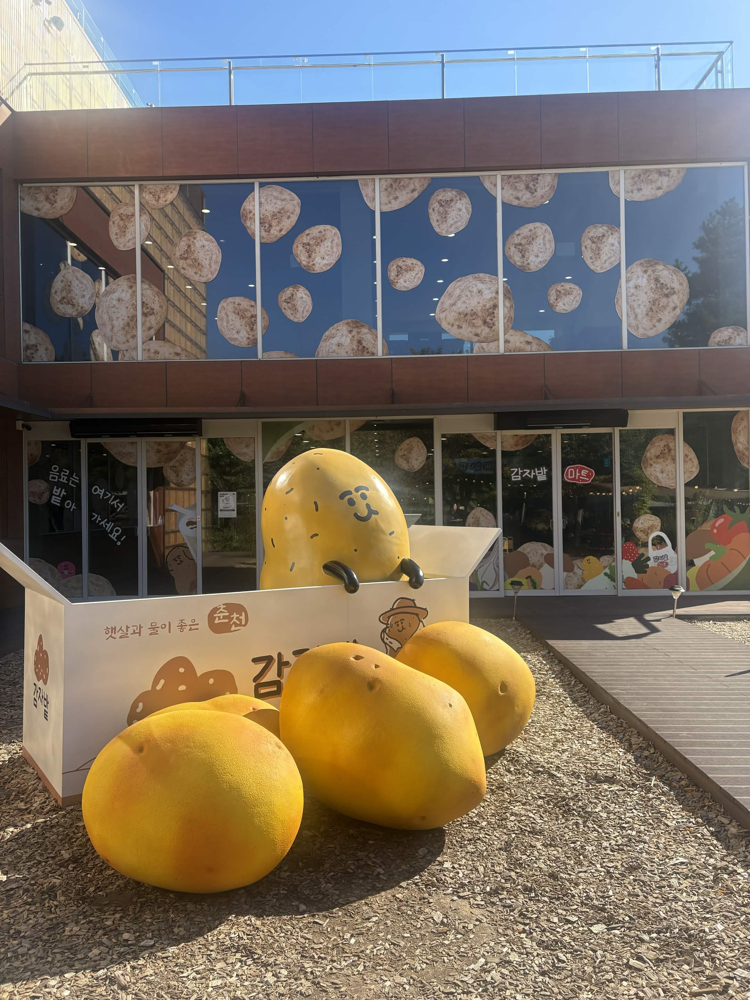
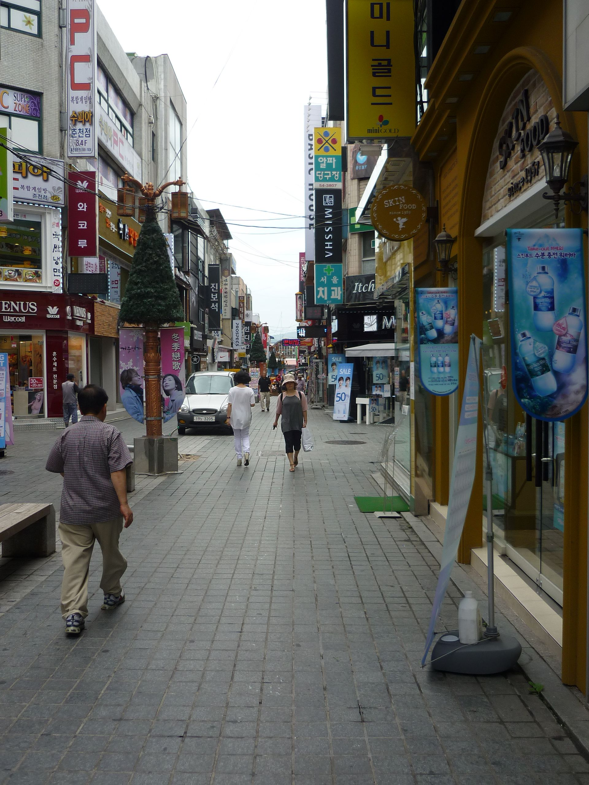
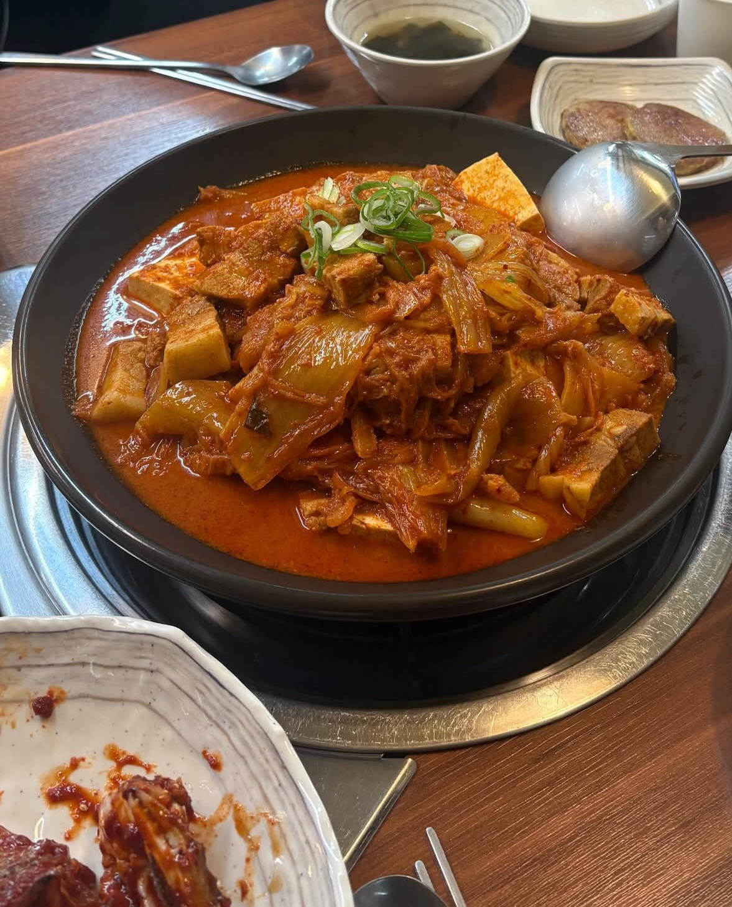

01 / STORY
김유정 문학촌
문학이 깃든 마을을 천천히 둘러보기
자세히 보기 ↗
산책도 하고, 드라이브도 하며
춘천에서 좋아하는 장면을 찾아보세요.
풍경과 이야기를 따라 걷는 춘천
문학이 깃든 마을을 천천히 둘러보기
자세히 보기 ↗강을 따라 펼쳐지는 춘천의 풍경
자세히 보기 ↗
춘천의 로컬 감자를 만나는 곳
자세히 보기 ↗
도심의 활기를 느끼며 걷는 거리
자세히 보기 ↗춘천에 남은 역사와 기억
자세히 보기 ↗물가를 따라 쉬어가는 산책 코스
자세히 보기 ↗여행 중 기억하고 싶은 맛

춘천에서 즐기는 닭갈비

든든하게 즐기는 김치찜
흑돈으로 채우는 한 끼